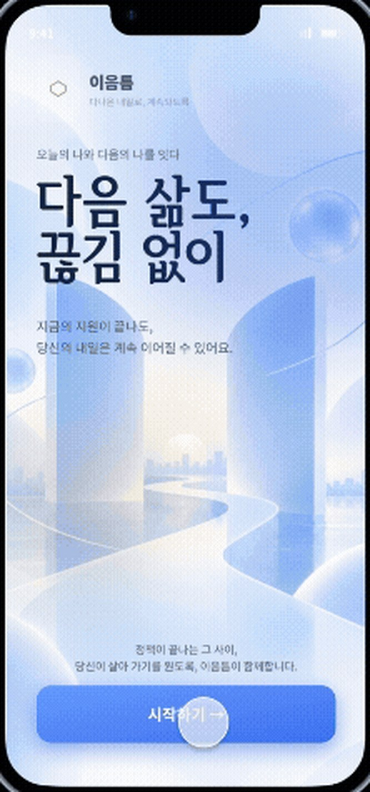
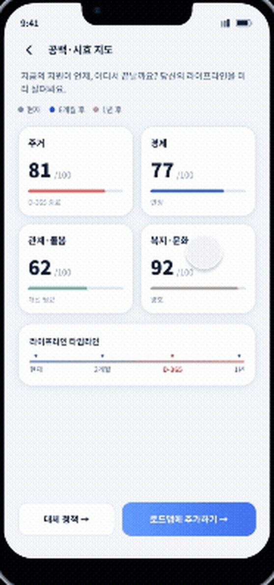
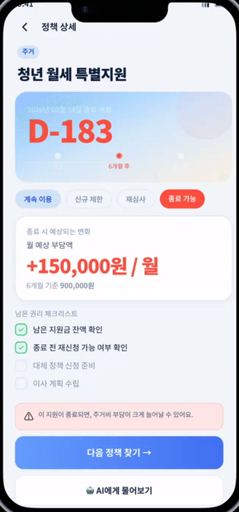

Team project · Prototype design · Figma
이음틈Ieumteum
ProblemYouth policies end at fixed age and time limits, and nothing connects people to the next one.
SolutionCalculates when each benefit ends, maps the gaps ahead, and suggests next steps.
How I approached it
Start from what is about to end. Rules decide eligibility; AI only explains the results.